Our Outdoor
Stories.
Connecting outdoor walks with daily life: from design materials and shared walks to recorded stories, postcards, and conversations indoors.

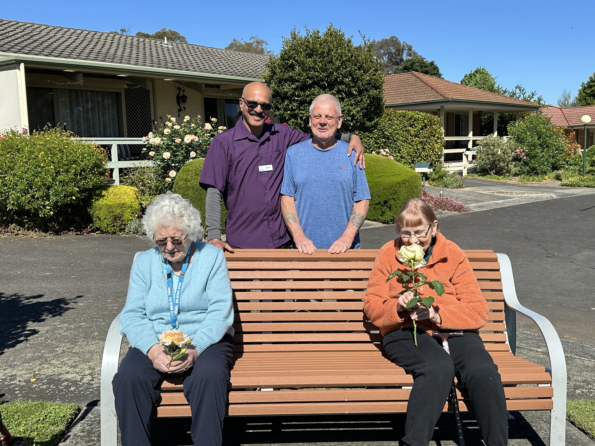
1. Design materials.
How can design materials support engagement beyond our visits? The materials pair a card to carry on a walk with information placed beside a plant.


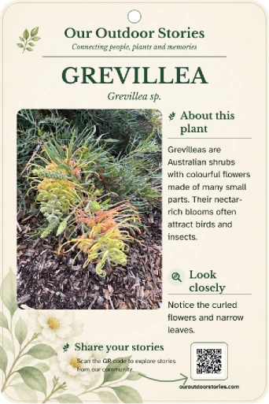
Care staff support the activity by helping people use the cards, look at the plants, and talk about what they notice.
2. Walking together.
We began at the café with “Can You Find It?” cards, then took them outside. The photographs follow one walk, from preparing to leave to pausing and looking closely together.

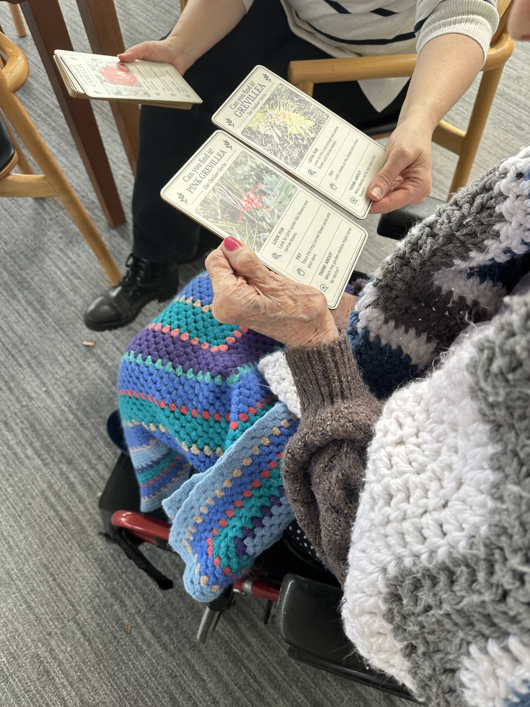

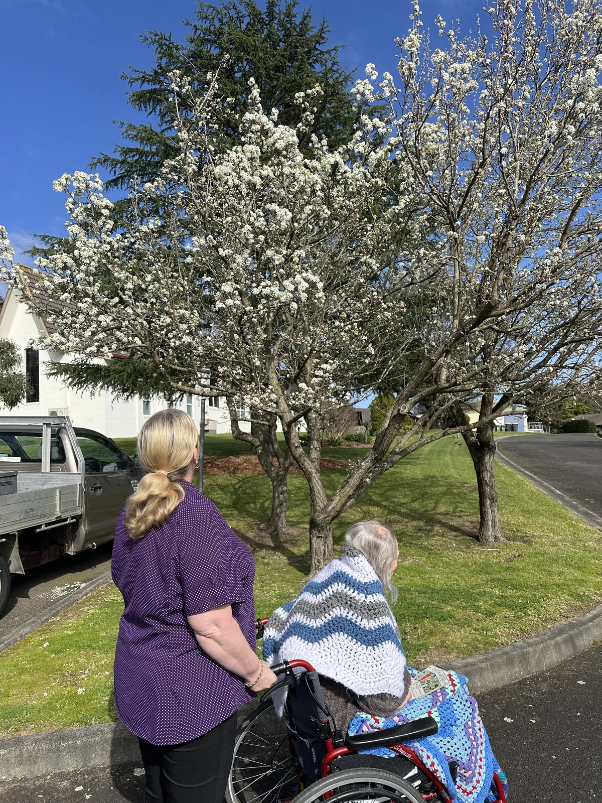


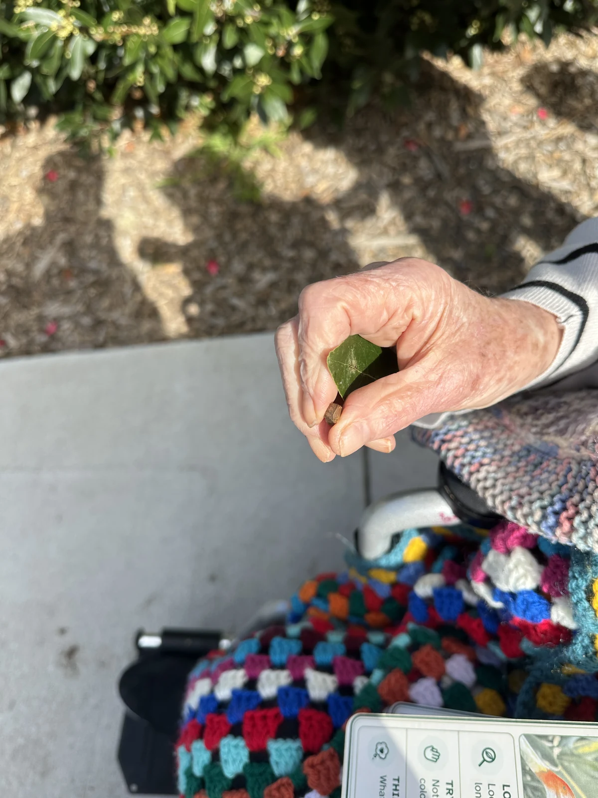
Walking activity, 4 September 2026 · Martin Luther Homes.
3. Sharing and recording.
Plants collected outdoors became prompts for indoor conversation. Residents shared a chosen plant, a reason for liking it, or a memory. Staff helped record their words on labels and story cards, keeping the contribution with the plant that prompted it.

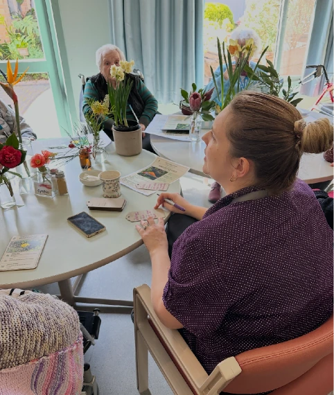

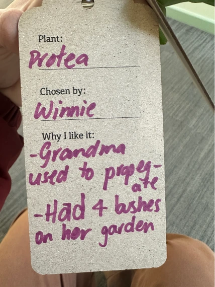

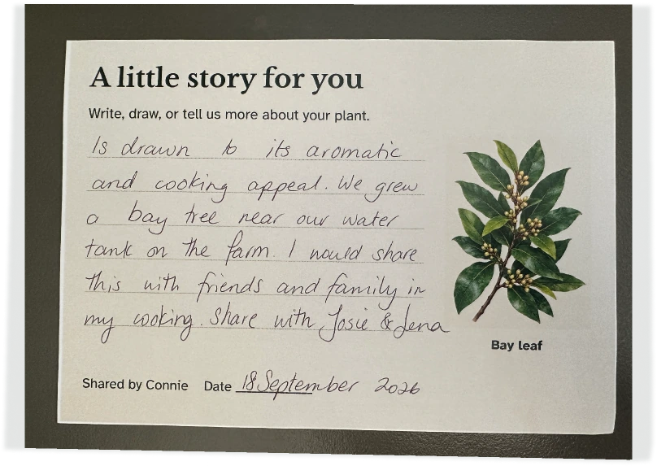
4. Making stories shareable.
The recorded contributions became objects to keep and share. Handwritten labels accompanied the plants, while personalised postcards brought together a resident’s portrait, chosen plant, and story.

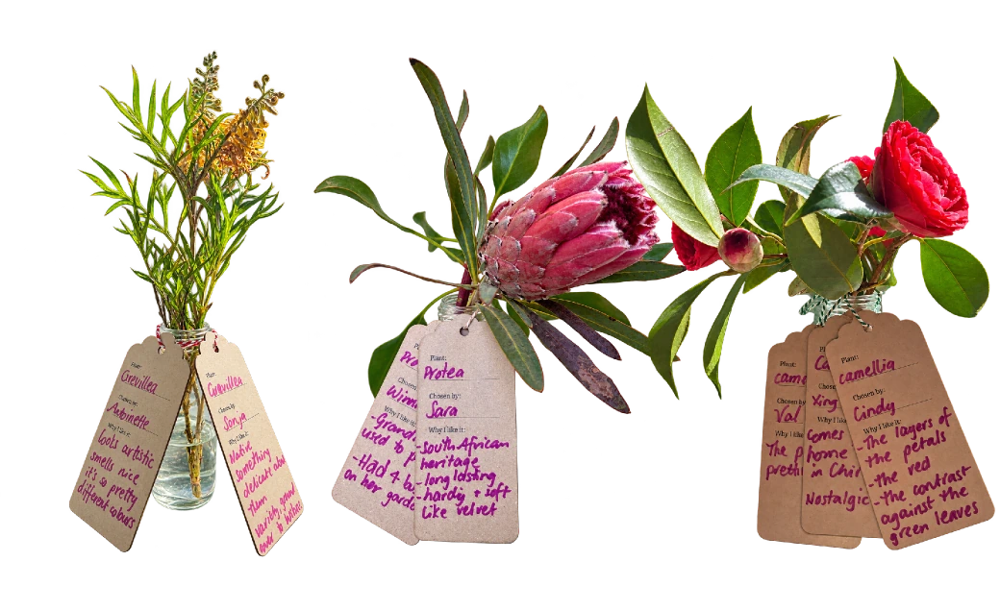

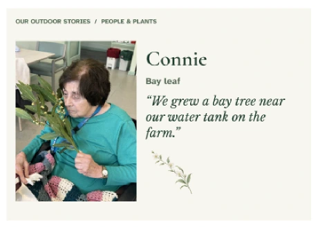

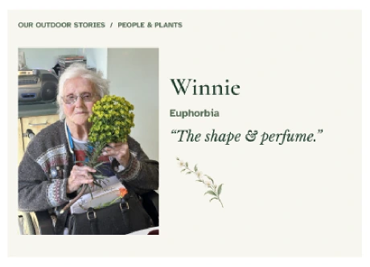
5. Revisiting the outdoors.
Back indoors, the walking map, garden video, and real plants provided shared reference points. Residents and staff could locate familiar plants on the map, pause the video to look, and continue the conversation together.

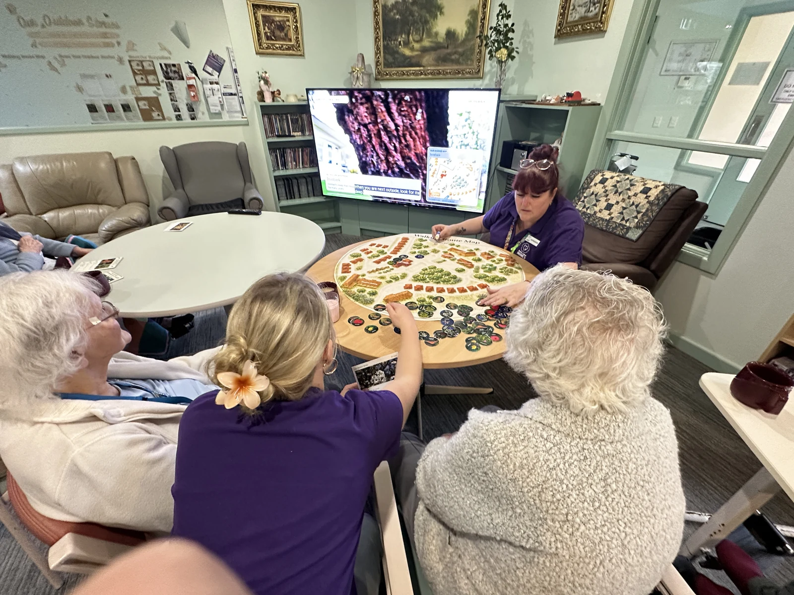

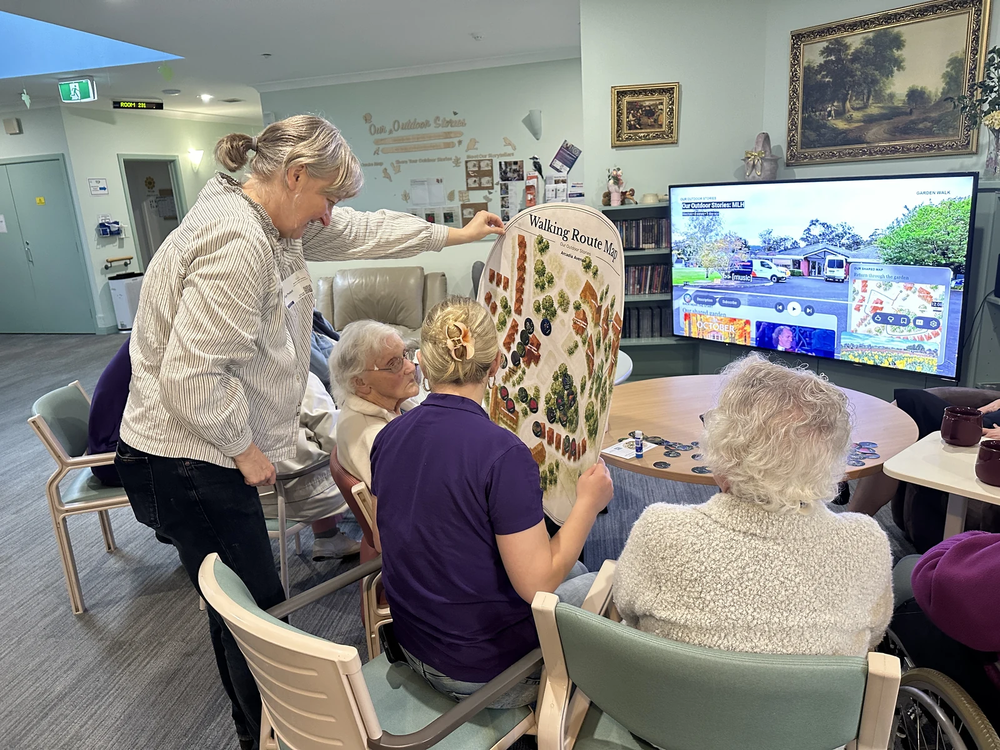
Indoor session, October 2026. This study is ongoing; longer-term use remains a research question.
Read Our Outdoor Stories.
The latest project book brings together shared walks, plants, photographs, and memories. Browse the pages to see the materials, residents’ contributions, and experiences from Our Outdoor Stories.